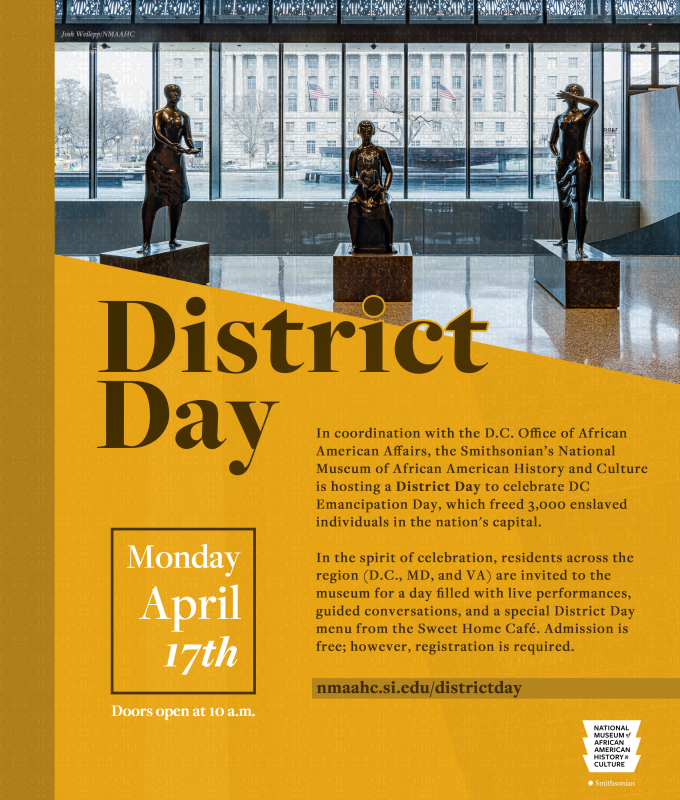
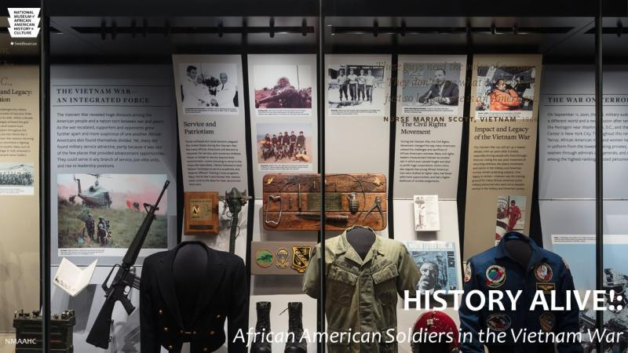

Upcoming
Upcoming
Living Wild with Hilton Carter
Join with Hilton Carter, the famous archiologist, into an adventure and history of Wild life.
20
Already Registered:
80
Seats remaining:
Details

District Day
In coordination with the D.C. Office of African American Affairs, the Smithsonian's National Museum of African American History and culture is hosting a District Day.
52
Already Registered:
18
Seats remaining:
Details

African American War
African Americans played a prominent role in the Vietnam War. The Vietnam War was the first American war in which Black and White troops were not formally segregated, and even saw significant growth in the number of African Americans engaged in battlefield combat, though some de facto segregation still occurred.
60
Already Registered:
10
Seats remaining:
Details